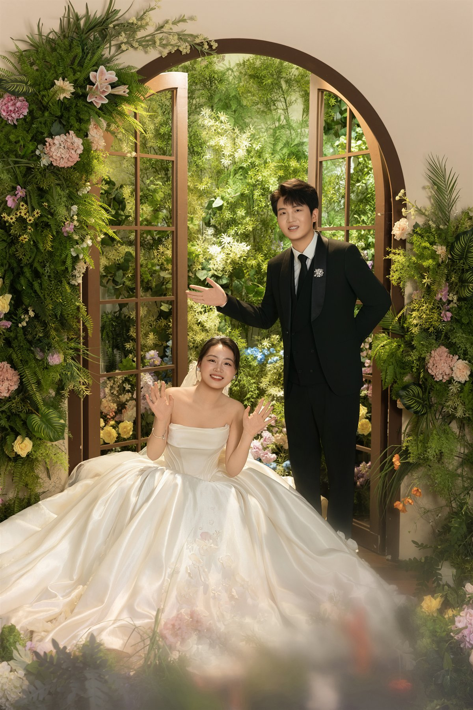
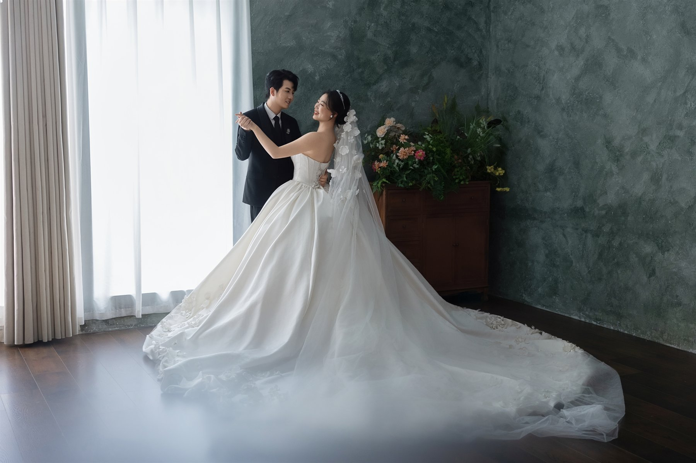
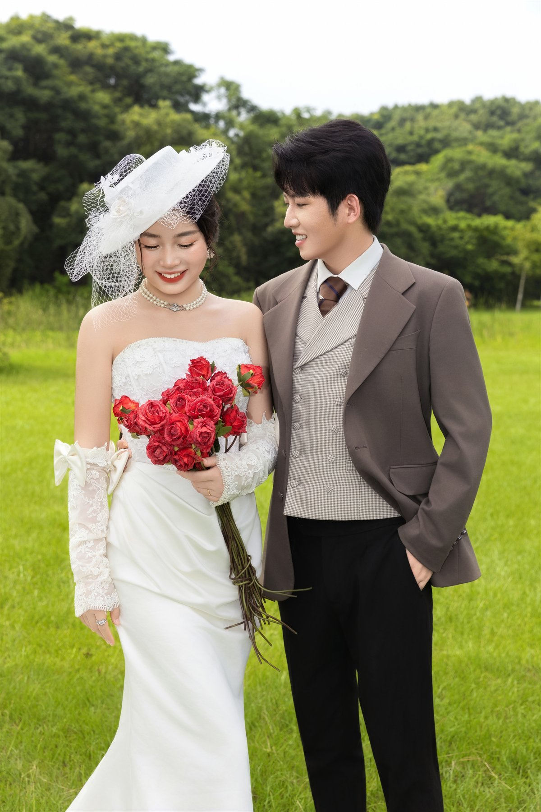
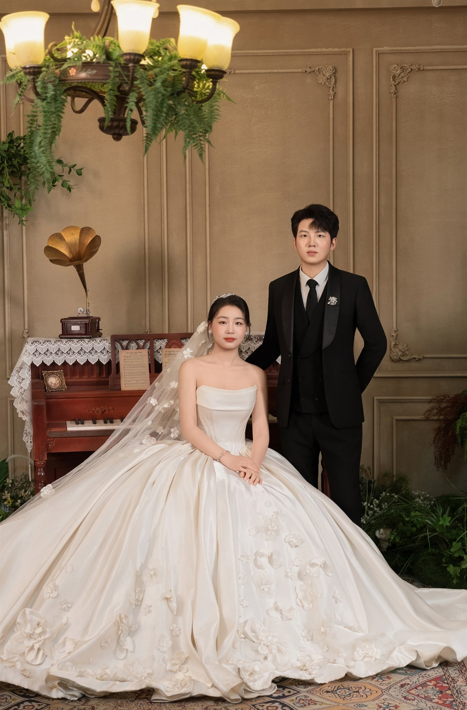
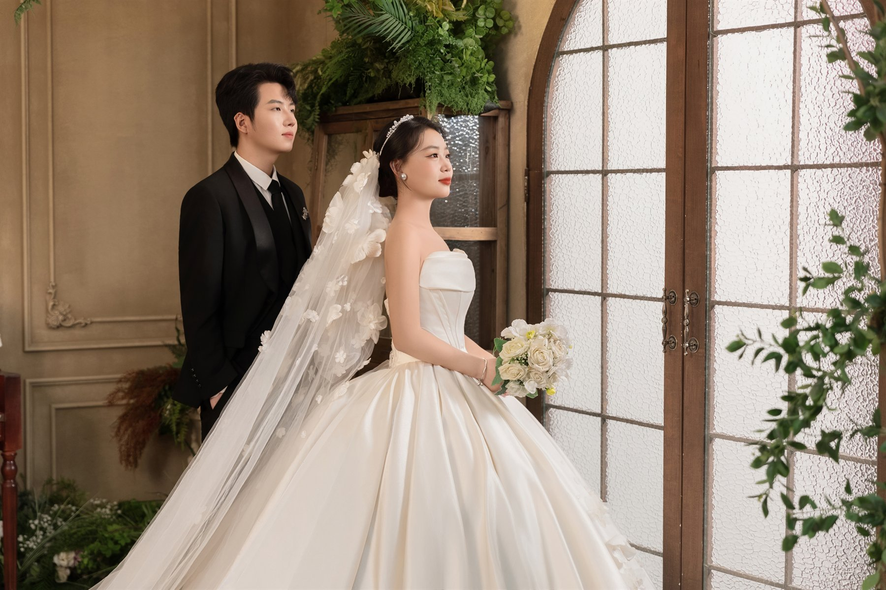

Opening Scene
把喜欢定格成一部双人画报
这一版只留下光影、礼服、情绪和几组我最喜欢的画面，像一本可以慢慢翻的婚纱 lookbook。
For friends
Chapter 01
这一版只留照片与氛围
舒浩川 & 万田甜
婚纱影像集
这一版只留下光影、礼服、情绪和几组我最喜欢的画面，像一本可以慢慢翻的婚纱 lookbook。

从红墙光影切到花园拱门，整组片子的气氛会慢慢从锋利变得柔软。
相册不做普通九宫格，而是像电影胶片一样慢慢滑过，让每张照片都有登场感。



线条干净、画面直接，适合把人物气质先立住。
绿植和柔光把气氛放松下来，像电影里的转场镜头。
草地、礼帽和玫瑰让整组外景更像一本旧杂志封面。
窗边、楼梯和留白把情绪压低一点，照片会更耐看。
室内的纵深、窗边的光和层层叠叠的裙摆，会让这组片子更像一段被剪进正片里的镜头。

没有多余的信息块，只是把这一组婚纱照单独整理出来，给朋友们慢慢翻看。